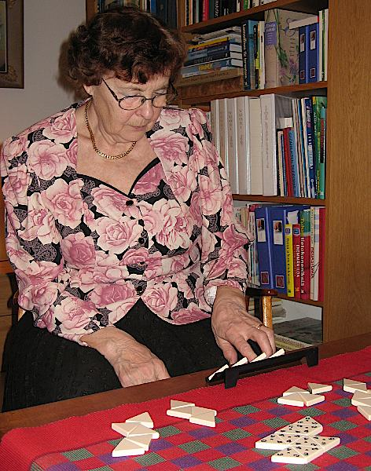
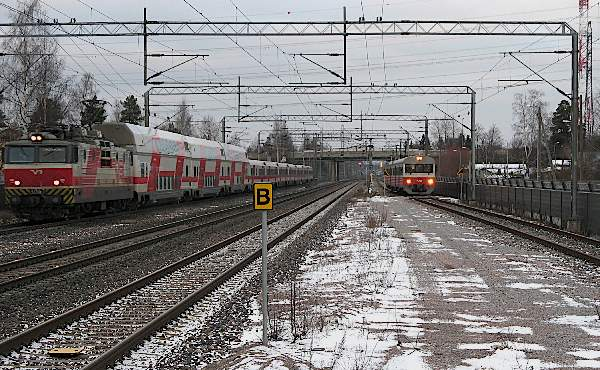
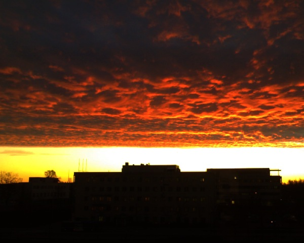

Pikkujoulut Eilalla Askistossa

Eilalla on nyt kaupunkiasunto Vantaalla Askistossa aivan Paulan ja Juhan lähellä. OIkein mukava asunto onkin. Pari huonetta, keittiö, sauna ja oma pieni piha. Kesät on hyvä viettää Kauhajoella ja talvella "lennetään" tänne etelään.
Vietimme samalla sekä tupaantuliaisia että perinteistä pikkujoulua. Riisipuuro ja muut pöydän herkut maistuivat. Perinteiseen ohjelmaan kuului arvausleikkejä ja musiikkia. Soitettiin rullattavalla pienolla ja laulettiin karaokea. Ja kaikilla oli perinteisesti mukavaa.
Joulun viettoa
Joulua edeltänyt aika ja joulun pyhät olivat säiden puolesta harmaata ja lumetonta. Tuntui, että aurinko ei noussut pariin viikkoon lainkaan. Elimme kuin kaamoksessa. Maa oli lumeton. Jumbossa oli hillittomät ruuhkat. Joulukuusen kynttilät eivät toimineet. Emme oikein tahtoneet päästä kunnon joulutunnelmaan.
Harmaudesta huolimatta jouluun mahtui kyllä paljon mukavaakin. Aattoa vietimme mummin ja vaarin luona ja joulupäivää Weguilla. Siellä koimme uuden makuelämyksen eli miltä maistuu vanha ja hieno vuosikertarommi (=hyvältä). Tapanina syötiin lounasta meillä mummien ja vaarin kanssa. Syötiin kinkkua ja laatikoita. Toiset sanovat kyllästyvänsä jouluruokiin parissa päivässä, mutta en minä. Suolaisen ja makean pyhä liitto, jonka yhdistää viinin happamuus, kutkuttelee ainakin minun makunystyröitäni.
Pukkikin oli muistanut meitä. Joululahjoistamme mieluisimpia olivat Pekan saama hieno paistokasari, Mirjan saamat Riedelin viinilasit ja Samin saama tallentava digiboxi. Viimeksi mainittu onkin ollut ahkerassa käytössä ja Sami taitaa sen erilaiset ominaisuudet jokseenkin läpikotaisin.
Uuden vuoden vastaanotto

Uusi vuosi vastaanotettin Wegujen ja mummin kanssa Heikinlaaksossa. Uuden vuoden säätila oli yhtä harmaa ja lumeton kuin koko loppuvuosi. Se ei kuitenkaan haitannut rakettien ammuskelijoita. Aivan kotipihan tuntumassakin sai suorastaan väistellä ympärillä lenteleviä ilotulitteita.
Kuukauden sää
Joulukuu oli miesmuistiin kaikkien aikojen lämpimin. Ennen joulua oli suorastaan keväisen tuntuisia ilmoja; aurinko paistoi ja oli lähes kymmenen astetta lämmintä. Jouluksi sen enempää kuin uudeksi vuodeksikaan emme saaneet lunta. Koko joulun aika oli pilvistä ja harmaata kaamosta.
Kuukauden ajatus
Jos sydämessä on oikeamielisyyttä,
luonteessa on kauneutta.
Jos luonteessa on kauneutta,
kotona vallitsee harmonia.
Jos kotona vallitsee harmonia,
kansan keskuudessa vallitsee järjestys.
Jos kansan keskuudessa vallitsee järjestys,
maailmassa vallitsee rauha.
- Kungfutse -
Kuukauden kuva

Aurinko laskee länteen.
Joulukuun kuvia